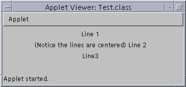

All Packages Class Hierarchy This Package Previous Next Index
Class com.sun.wizards.awt.MultilineLabel
java.lang.Object
|
+----java.awt.Component
|
+----java.awt.Container
|
+----java.awt.Panel
|
+----com.sun.wizards.awt.MultilineLabel
- public class MultilineLabel
- extends Panel
The MultilineLabel object displays text in multiple
lines, which are separated by "\n".

Here is the code for this applet:
import java.applet.Applet;
import java.awt.*;
import com.sun.wizards.awt.*;
public class Test extends Applet
{
public void init()
{
add(new MultilineLabel("Line 1\n(Notice the lines are centered) Line 2\nLine3",
MultilineLabel.CENTER));
}
}

-
 CENTER
CENTER
- A tag that indicates the text should be
centered.
-
LEFT
- A tag that indicates the text should be
left justified.
-
RIGHT
- A tag that indicates the text should be
right justified.

-
 MultilineLabel(String)
MultilineLabel(String)
- Creates a label with the specified text.
-
MultilineLabel(String, int)
- Creates a label with the specified text, displayed with
the specified alignment.

-
 doLayout()
doLayout()
- The doLayout method has been overridden to perform
size calculations before the layout is done.
-
getPreferredSize()
- Returns the preferred size of this multiline label.
-
paint(Graphics)
- Paint the multiline label using the specified
Graphics object.

 CENTER
CENTER
public static final int CENTER
- A tag that indicates the text should be
centered.
LEFT
public static final int LEFT
- A tag that indicates the text should be
left justified.
RIGHT
public static final int RIGHT
- A tag that indicates the text should be
right justified.

 MultilineLabel
MultilineLabel
public MultilineLabel(String text)
- Creates a label with the specified text. If the text
contains one or more instances of the string "\n", the
text will be broken into multiple lines.
- Parameters:
- text - The text to be displayed by this label.
MultilineLabel
public MultilineLabel(String text,
int alignment)
- Creates a label with the specified text, displayed with
the specified alignment. If the text contains one or
more instances of the string "\n", the text will be
broken into multiple lines. The alignment can be
LEFT, RIGHT, or CENTER.
- Parameters:
- text - The text to be displayed by this label.
- alignment - The desired text alignment.

 doLayout
doLayout
public void doLayout()
- The doLayout method has been overridden to perform
size calculations before the layout is done. These
calculations must be performed at layout time, so
the font metrics can be used on the current font.
- Overrides:
- doLayout in class Container
getPreferredSize
public Dimension getPreferredSize()
- Returns the preferred size of this multiline label.
- Returns:
- The preferred size.
- Overrides:
- getPreferredSize in class Container
paint
public void paint(Graphics g)
- Paint the multiline label using the specified
Graphics object.
- Parameters:
- g - The Graphics object to use for the paint.
- Overrides:
- paint in class Container
All Packages Class Hierarchy This Package Previous Next Index